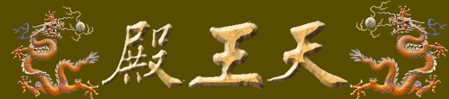

|  |
天王殿。一般天王殿中間是彌勒佛，兩邊是四天王。這種安排不能說錯，但不妥當 第一，彌勒佛不是把門的。他了不起，他是未來佛！他是生靈回歸的總斷後，這個差事無人願意幹。故應將彌勒升入大佛殿，與阿彌陀佛平起平坐。 第二，天王殿的主宰是九天王，即玄龍大帝。他是把門的，把昊大之門，把宙心之門。而四天王都是他的部下。威武的四天王是誰？若說出來你會氣死！是四嬌娘…… 爲什麽修成男相兇惡樣？凡世重男輕女，兇惡樣是爲了嚇唬老百姓的。 會不會有佛學家氣昏過去了？可能，因爲他是凡人，不是菩薩。經雲：若無我相人相衆生相壽者相，即是菩薩。若有我相人相衆生相壽者相，不名菩薩。故，凡所有相，皆是虛妄，唯此無相之相是真實之相。 但也不能殿裏空空，四面白牆。只是何必把四嬌娘做成如此兇惡樣？打仗時兇惡，但長相卻是絕世佳人。 在一般的天王殿，彌勒的背後是韋馱天。他是四天王的部下，是負責警戒守衛的。故，由他正對著大雄寶殿，以示護衛佛陀。 但佛陀之所以稱之爲佛陀，是因爲他具足十一級能量而如去如來。他又何必靠別人護持呢？ 真正護持的應是佛法，是護持佛法而不是護持哪個佛。而宇宙第一大護法就是戰神大黑天，她就是薄伽梵女神，梵天第一大神，正義女神九天玄女。 但密宗的大黑天神像是最最兇惡的。那是表意，是表示她厲害，能降魔鎮邪。而她卻是宇宙美人王。她爲什麽是美人王？正義爲美！ 如此，山門爲天龍門。天王殿爲天龍殿，它是昊天第一名殿，是昊天的國防部。 s |
|